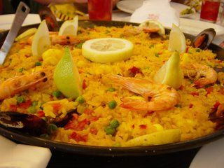

Welcome to Recetas de mariscos
Recetas con mariscos para saborear la Cuaresma | Sabor y Estilo
2021.06.23 22:05
Results See all results Voy al Súper Vida Saludable Gourmet Sommelier Maestros de la Parrilla Recetas Menu Voy al Súper Vida Saludable Gourmet Sommelier Maestros de la Parrilla Recetas Results Ver todo
Recetas con mariscos para saborear la Cuaresma
Inicio » Recetas con mariscos para saborear la Cuaresma
Diana Trejo febrero 8, 2021 Share on facebook Facebook Share on twitter Twitter Share on pinterest PinterestCuaresma es la temporada donde pescados y mariscos tienen un papel protagónico, toma nota de estas sugerencias
La variedad de ingredientes y técnicas culinarias de la cocina mexicana permiten un menú variado que no necesita incluir carne roja en su preparación. Por ello, las ensaladas, y los pescados y mariscos se encuentran con mayor frecuencia en la temporada de Cuaresma. Te dejamos ideas para deleitar a tus seres queridos con recetas de pescados y mariscos .
Los platos que incluyen estas proteínas, aportan gran cantidad de aminoácidos, necesarios para el buen funcionamiento del organismo, por esto, y debido a su alto contenido en Omega 3, vitaminas y minerales, resulta beneficioso incluirlos en la dieta diaria.
Sopa de mariscos
Una de las sopas más populares de la comida mexicana. Se trata de un caldo a base de chile rojo y jitomate, que tiene como principal proteína camarones, pulpo y pescados.
Prepárala con esta receta fácil Sopa de mariscos
Paella de mariscos
Si buscas consentir a tus comensales, prepara un plato clásico y lleno de texturas y sabores que combinan diferentes culturas: la paella de mariscos, también conocida como paella valenciana debido a su origen español. Es considerada como el platillo más representativo de España.
Conoce más curiosidades de la paella en esta nota .
Prepara esta receta con los mariscos de tu preferencia, y agrega el sabor mexicano con especias y condimentos.
Aguachile de camarón
Platillo típico de la región occidental de México, por lo que existen distintas versiones provenientes de Baja California, Nayarit, Sinaloa y Sonora. El ingrediente protagonista de este manjar son los camarones, que son una fuente importante de proteína magra y vitamina B 12 , nutrientes escenciales para la producción y buena salud de las células de nuestro cuerpo.
El aguachile de camarón suele incluir chiles frescos, limón, cebolla, pepino y agua. Sin embargo, puedes añadirle un toque especial con mango y chile habanero, consulta aquí la receta completa.
¡No dejes que la temporada te sorprenda! Con estas recetas deleitarás los paladares de todos en casa. Prepáralas fácil y rápido pidiendo todos los ingredientes a domicilio con las diferentes opciones que tenemos para ti o acude a tu tienda más cercana.
Share on facebook Facebook Share on twitter Twitter Share on pinterest PinterestRecomendaciones
Paloma highball con Chivas Regal®
Crepas saladas de queso manchego Caperucita
Delicioso lomo a la BBQ, ¡aprende a prepararlo!
Sushi: máximo representante de la comida japonesa
Disfruta el sabor de un rico rib eye hecho en casa
Prev Anterior Regalos para papá pambolero Siguiente Fórmulas lácteas para bebé NextTe puede interesar
Pink latte
El pink latte es una exquisita bebida caliente que destaca por su sabor y llamativo color, ¡perfecto para disfrutar en una tarde lluviosa!
Mousse de chocolate Hershey’s
Consiente a esa persona especial con este delicioso mouse de chocolate ¡hecho en casa! Te decimos cómo prepararlo.
Carpaccio de res
Para saber cómo hacer un carpaccio descubre esta receta fácil y rápida. Lleva esta receta italiana a tu mesa.
Curiosidades de la comida alemana
Conoce un poco más de la fascinante gastronomía de Alemania Son muchas las cualidades de la comida alemana que la hacen destacar, te compartimos detalles.
Quiero recibir más noticias
Gourmet
En nuestra sección Gourmet conocerás un poco más de la gastronomía de diferentes países como España, Francia, Italia y Alemania. Conocerás diversos tipos de comida gourmet y productos orgánicos que beneficiarán a tu familia. Además, con las exclusivas recetas de Superama , podrás consentir a tu familia con diferentes comidas saludables con los ingredientes más frescos
¿Quiénes somos? Aviso de Privacidad